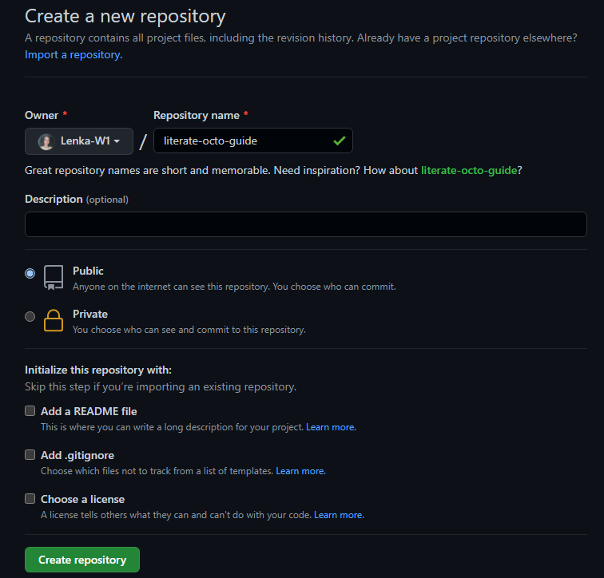
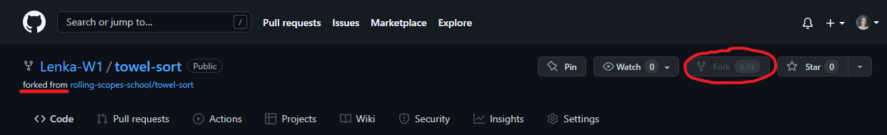
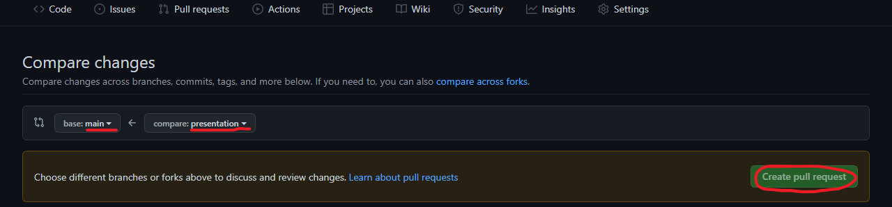
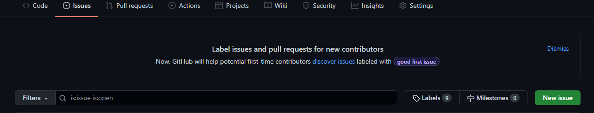
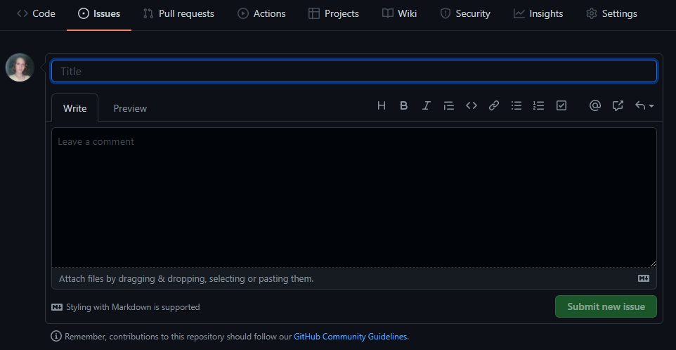

GitHub features
What is GitHub?
And what is it for?
GitHub is an international web service for hosting IT projects and their joint development.
The creators of the site call GitHub a "social network for developers." In addition to posting code, members can chat, comment on each other's edits, and follow the news of friends.
Repository
A repository is a directory where your project files are stored. It can be located in a GitHub repository or in a local repository on your computer. You can store code files, images, audio, or anything related to a project in the repository.
The repository can be public, which is available to everyone and private, which is available only to you.
Repository Forking
Forking a repository means that you are creating a new project based on an existing repository. In simple terms, forking a repository means that you are copying an existing repository, making some necessary changes, save the new version as a new repository and call it your own project.
Pull Request
A pull request is a request to push changes from your branch to the master branch of the source repository. In most cases, a pull request is used to integrate new functionality or fix a bug in the main branch of a project.
GitHub Issues
GitHub Issues is one of the most popular issue trackers in the world.
 GitHub Issues provide repository owners with the ability to organize, tag, and associate issues with specific development milestones. If you create an issue on another user's project, it will remain open until you or someone else resolves it, or the repository owner simply closes it.
GitHub Wiki
Every repository on GitHub has a documentation section called a wiki.

You can use your repository's wiki to share detailed information about your project, such as how to use it, how you developed it, or its core principles.
GitHub Pages
GitHub Pages are public webpages hosted and published through GitHub. You can use GitHub Pages to showcase some open source projects, host a blog, or even share your resume.
Summarizing
We have covered only a part of all GitHub features. GitHub is a great tool to help make the coding process even easier and more enjoyable. Moreover, this is a great opportunity to work on real projects. GitHub is something that will be equally useful for both novice programmers and experienced ones.
The End!